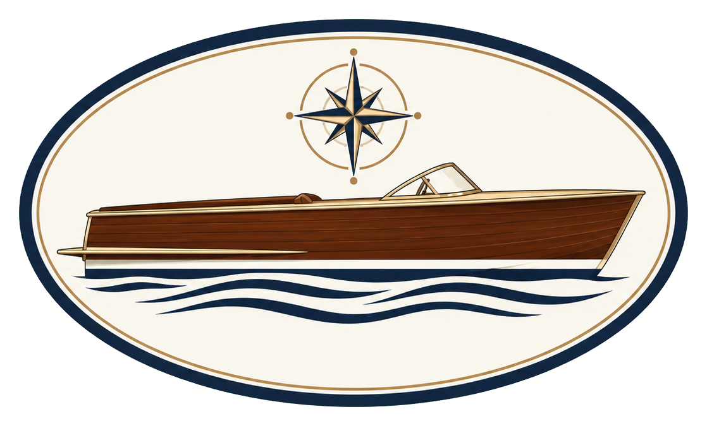

PSKŁ · SZCZECIN · EST. 2026

Logo, które prowadzi do PSKŁ
Kliknij logo, aby otworzyć stronę stowarzyszenia.
Wyślij dalej
Wklej link do wiadomości lub posta. Jeśli dany serwis obsługuje podglądy stron, może wyświetlić logo jako klikalną kartę.
{kind=link}
Logo z linkiem można wkleić do edytora obsługującego treść formatowaną, np. podpisu e-mail. Sam obraz PNG nie zawiera aktywnego odnośnika. W komunikatorach udostępnij adres strony.
Logo na telefonie lub komputerze
Po dodaniu skrótu kliknięcie ikony PSKŁ otworzy stronę. Do korzystania z katalogu i ofert potrzebne jest połączenie z internetem.
Android — Chrome
Otwórz tę stronę w Chrome. Wybierz menu ⋮ → Dodaj do ekranu głównego, a następnie Zainstaluj lub Utwórz skrót, zależnie od dostępnej opcji. Zatwierdź nazwę PSKŁ.
Komputer — Chrome lub Edge
Użyj przycisku „Dodaj ikonę na ekran”. Jeśli instalacja nie zostanie zaproponowana, otwórz menu przeglądarki i wybierz instalację strony jako aplikacji. Po instalacji możesz przypiąć PSKŁ do pulpitu, menu Start lub paska zadań, zależnie od systemu.
Możesz również przeciągnąć duże logo z tej strony na pulpit. Powstanie zwykły skrót internetowy; wygląd jego ikony zależy od przeglądarki i systemu.
iPhone lub iPad — Safari
Wybierz Udostępnij → Do ekranu początkowego → Dodaj. Ikona PSKŁ będzie otwierać stronę.
Dodanie ikony wymaga potwierdzenia na urządzeniu. Nazwy opcji mogą różnić się między wersjami przeglądarek.